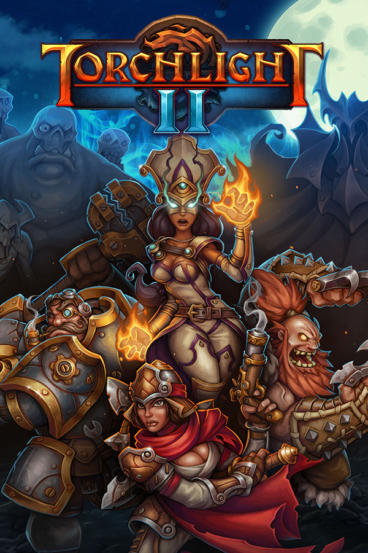

Torchlight II
Torchlight II
Details
|  | |
| Playtime | Not Played |
| Last Activity | Never |
| Added | 12/27/2020 17:07:18 |
| Modified | 3/16/2021 1:08:06 |
| Completion Status | Not Played |
| Library | Epic |
| Source | Epic |
| Platform | PC (Windows) |
| Release Date | 9/20/2012 |
| Community Score | 79 |
| Critic Score | 86 |
| User Score | |
| Genre | Adventure Hack and slash/Beat 'em up Indie Role-playing (RPG) |
| Developer | Runic Games |
| Publisher | Runic Games |
| Feature | Co-Operative Multiplayer Single Player |
| Links | Steam Official Website Wikipedia GOG Epic Twitch Wikia Youtube |
| Tag | |
Description
The award-winning Action RPG is back, bigger and better than ever! Torchlight II is filled to the brim with randomized levels, enemies and loot. Capturing all the flavor and excitement of the original, Torchlight II expands the world and adds features players wanted most, including online and LAN multiplayer. Once again, the fate of the world is in your hands.
CHARACTERS
With four classes to choose from, you’ll have a variety of play styles at your fingertips. Each class can be played as either male or female, with customized cosmetic features and looks to make your hero stand out.
MULTIPLAYER
Play co-op with your friends via LAN or over the Internet for free. Our matchmaking service lets you connect and play games with people around the world.
OPEN WORLD
Explore the vast overworld and multiple hub towns of Vilderan. Fight through rain, snow, day and night. Level randomization ensures new layouts, paths, loot, and monsters every time you play.
MOD SUPPORT
Torchlight II supports Steam Workshop, allowing for automatic mod subscription and synchronization. Choose from over a thousand mods and bend the game to your will. Or use GUTS, the Torchlight II editor, to create and share your work with the entire world!
NEW GAME PLUS
In New Game Plus, the game's not over until you say it is. Once you've beaten Torchlight II's primary campaign, you can start again with the same character for a significantly greater challenge. You'll keep all the skills, gold, and gear you worked so hard for!
PETS & FISHING
These popular features make their return in Torchlight II in improved form. More choices, better effects, and your pet will still make the run to town to sell your loot so you don’t have to.
Key Features
CHARACTERS
With four classes to choose from, you’ll have a variety of play styles at your fingertips. Each class can be played as either male or female, with customized cosmetic features and looks to make your hero stand out.
MULTIPLAYER
Play co-op with your friends via LAN or over the Internet for free. Our matchmaking service lets you connect and play games with people around the world.
OPEN WORLD
Explore the vast overworld and multiple hub towns of Vilderan. Fight through rain, snow, day and night. Level randomization ensures new layouts, paths, loot, and monsters every time you play.
MOD SUPPORT
Torchlight II supports Steam Workshop, allowing for automatic mod subscription and synchronization. Choose from over a thousand mods and bend the game to your will. Or use GUTS, the Torchlight II editor, to create and share your work with the entire world!
NEW GAME PLUS
In New Game Plus, the game's not over until you say it is. Once you've beaten Torchlight II's primary campaign, you can start again with the same character for a significantly greater challenge. You'll keep all the skills, gold, and gear you worked so hard for!
PETS & FISHING
These popular features make their return in Torchlight II in improved form. More choices, better effects, and your pet will still make the run to town to sell your loot so you don’t have to.